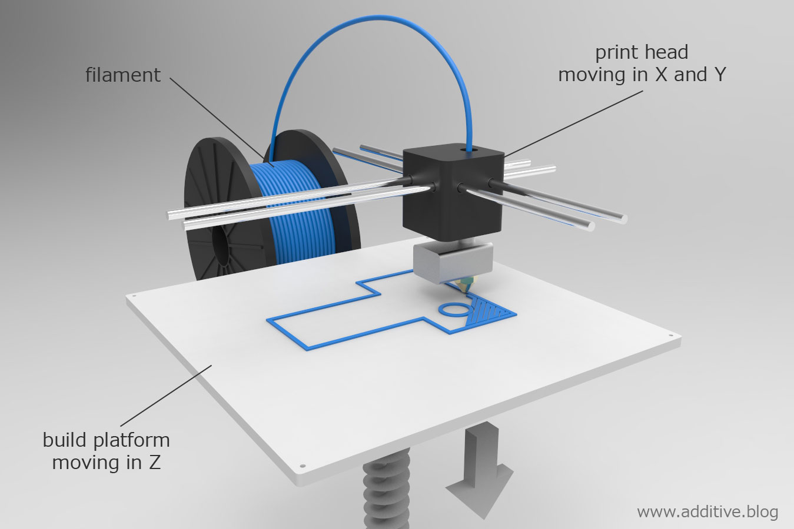

Fused deposition modeling (FDM)
Fused deposition modeling (FDM) is the method of printing that includes layering material in order to create a 3D object. This process allows for the use of of a variety of material including many plastics (ABS, PLA, PETG) and infused plastics (wood, aluminum infused).

Advantages
- Cheap, many 3D printers cost under 1000$
- Easy to use, often not very complex
- Large Community, one of the largest support community due to its popularity
Disadvantages
- High maintenance, due to many moving parts
- Limited to plastics, due to the extruder requiring a low melting point
- Slow compared to other printing methods, due to the extruder requiring slow speeds in order to function
For more info click here